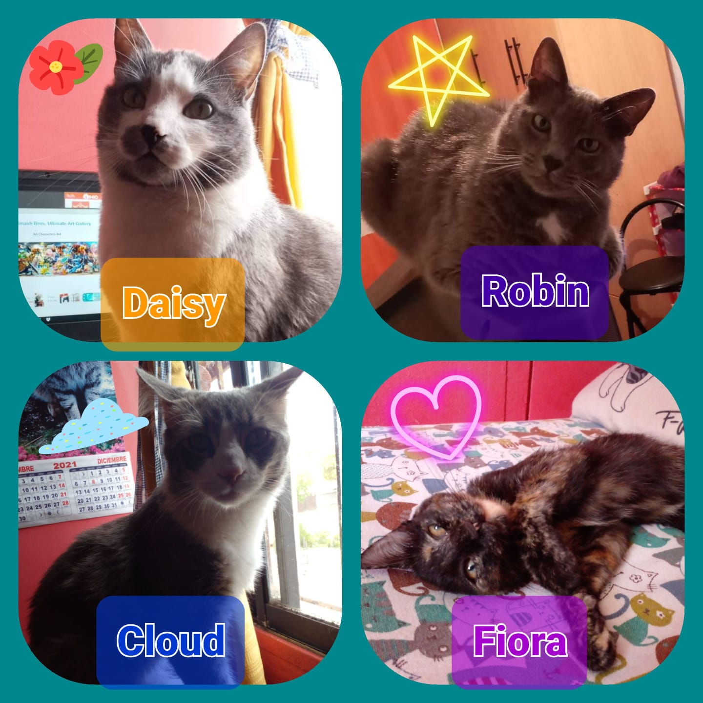

Pedro Antonio Vergara Merino

Perfil Profesional
Ingeniero Civil Informático con competencias para programación en lenguaje Java, diseño de
páginas webs en HTML, CSS y JavaScript.
Manejo de lenguaje SQL para la construcción de base de
datos Oracle. Cuenta con habilidades para el trabajo en equipo, es responsable y proactivo.
Macostas
Videojuegos favoritos
- Super Smash Bros. Ultimate
- Mario Kart 8 Deluxe
- Persona 5 Royal
- Injustice 2
- Sonic Adventure 2: Battle
- Mario Strikers: Battle League
- Mario Party SuperStars
- The Legend of Zelda Twiligth Princess
- Hyurle Warriors Definitive Edition
- Sonic Heroes
Antecedentes Academicos
- -Técnico Nivel Medio Contabildad / Centro educacional Eduardo De La Barra/2016
- -Ingeniería Civil Informática / Universidad San Sebastian/2021
- -Desarrollador JavaScript / Generations Chile/2023
Estudios Complementarios
- -Curso JavaScript 1/ Jovenes Programadores/2022
- -Bootcamp en Implementación de Practicas de SICyP/Universidad Santiago de Chile
Antecedentes Laborales
- -Practicante de Ingenieria/ Industria y Mineria Ltda
- -Practicante de Ingenieria/ I&M Capacita Ltda.
- -Analista de Sistemas y Gestión de MarketPlace/ Rozenberg Spa.